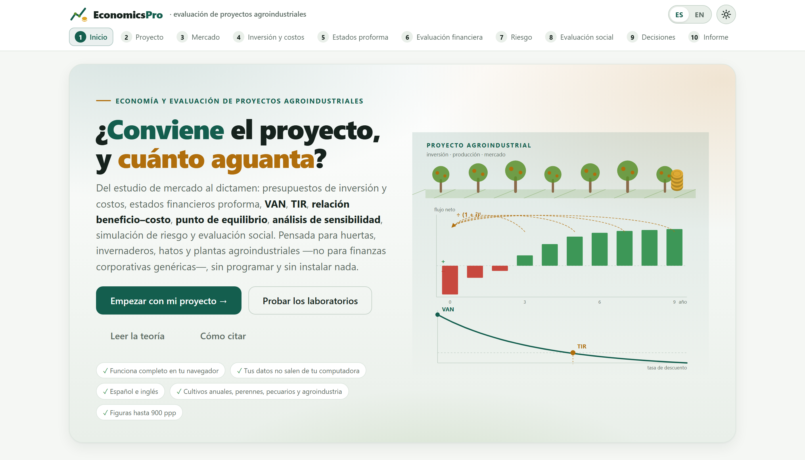
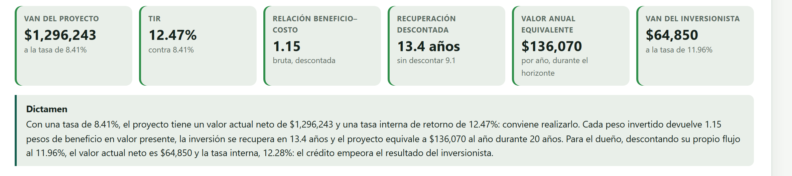
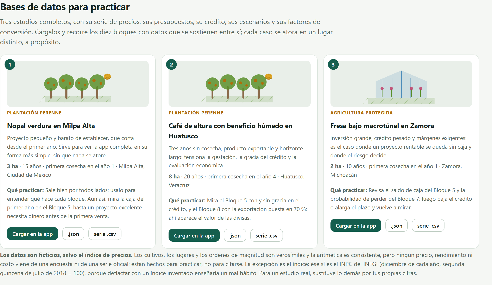

El identificador de objeto digital (DOI) se añadirá a ambas citas cuando la versión 1.0 se archive. Mientras tanto, la cita del programa aparece en la sección Cómo citar de la portada de la app y al final de cada informe del Bloque 10.
EconomicsPro funciona por completo dentro de tu navegador. Los archivos que abres se leen en tu computadora y nunca se envían a ningún servidor. Puedes evaluar el proyecto de una empresa, el expediente de una inversión pública o los datos de una tesis en curso sin que nada de eso salga de tu equipo. El programa tampoco necesita internet: una vez copiado, funciona con la máquina desconectada.
Las ilustraciones, los diagramas y las capturas de pantalla de este manual son originales: se generaron con el propio programa o con código escrito para el manual. Los tres estudios de práctica que se usan como ejemplo a lo largo del texto —nopal, café y fresa— llevan datos ficticios, y así se dice cada vez que aparecen; las series y los presupuestos de ejemplo de los bloques son ilustrativos, no cifras oficiales. La única serie real que trae el programa es el índice nacional de precios al consumidor del INEGI, usado bajo sus términos de libre uso.
El manual sigue el mismo orden que la app: diez bloques numerados que se recorren de izquierda a derecha en la barra de arriba. Cada capítulo explica un bloque y lleva su mismo número —el capítulo 4 es el Bloque 4, y sus secciones, figuras y tablas se numeran 4.1, 4.2…—. Cada uno empieza con la teoría indispensable, sigue con lo que la pantalla calcula y cómo se lee, y termina con un ejemplo paso a paso usando los datos que ya vienen dentro del programa. Esta introducción va antes de los bloques y se numera aparte: I.1, I.2…
El color del bloque aparece en la apertura de su capítulo, en el número de cada sección, en la pestaña del borde de la hoja y en el índice, y es el mismo de la franja de la portada. Así sabes de un vistazo en qué parte de la app estás.
| Bloque | Nombre en la app | Qué hace |
|---|---|---|
| 1 | Inicio | Portada, el motor financiero completo, dos laboratorios que calculan de verdad, la teoría en lenguaje claro y las referencias |
| 2 | Proyecto | Tipo de proyecto, horizonte, moneda, precios constantes o corrientes, tasa de descuento y régimen fiscal |
| 3 | Mercado | Series de precio y rendimiento, deflación, proyección con banda, demanda y oferta, y programa de ventas |
| 4 | Inversión y costos | Inversión fija y diferida, presupuestos de establecimiento y de operación, reposiciones y capital de trabajo |
| 5 | Estados proforma | Crédito refaccionario y de avío, estado de resultados, los dos flujos, balance, punto de equilibrio y razones |
| 6 | Evaluación financiera | VAN, TIR, TIRM, relación beneficio–costo, recuperación, valor anual equivalente y análisis marginal del CIMMYT |
| 7 | Riesgo | Sensibilidad, valores límite, tornado, escenarios, simulación de Monte Carlo y árbol de decisión |
| 8 | Evaluación social | Precios cuenta, eliminación de transferencias, VANE, empleo, divisas y valor agregado |
| 9 | Decisiones | Alternativas comparadas, TIR incremental, racionamiento de capital, reemplazo, turno óptimo y comprar o rentar |
| 10 | Informe | Estudio de figuras, informe imprimible con metodología y memoria de cálculo, y paquete del estudio |
Aclaraciones y consejos prácticos que ahorran tiempo.
Lo que puede cambiar tus conclusiones si se pasa por alto.
La idea detrás de un cálculo, sin fórmulas innecesarias.
Un caso con los datos incluidos en el programa, paso a paso.
| Si el resultado cae en este caso… | entonces esta es la lectura recomendada. |
Son guías para interpretar, no leyes: lo que sabes del cultivo, de la empresa y de la región siempre manda.
| Así se escribe | Significa |
|---|---|
| Armar el informe | Un botón, casilla o menú de la app, con su texto tal como aparece en pantalla en español. |
| Bloque 10›Estudio de figuras | Una ruta: abre lo primero y dentro busca lo segundo. |
Precio, .csv | Un nombre de columna, de archivo o un valor que se escribe tal cual. |
| VAN, TIR, B/C, VAE · NPV, IRR | Siglas en español; entre paréntesis, cuando ayuda, la sigla inglesa de la literatura. |
| $1,512,493 · $102,177.71 | Dinero: sin decimales cuando es un total, con dos cuando es un precio unitario, como en la app. |
| ● ◐ — | Disponible · disponible en parte o con condiciones · no aplica. |
Todos los resultados que aparecen en el texto se obtuvieron corriendo la app con los datos que se indican, y se copiaron de la pantalla. Si repites los pasos con la misma base de práctica, debes ver los mismos números. Cuando una cifra depende del azar —la simulación de Monte Carlo, por ejemplo— se dice con qué semilla se obtuvo.
Qué es el programa, qué preguntas de un estudio de evaluación responde, qué datos acepta y cómo se recorre de principio a fin. Incluye las cinco ideas de evaluación de proyectos que sostienen todo lo demás, y una lista honesta de lo que el programa no hace.
EconomicsPro es una plataforma para armar y evaluar el estudio económico y financiero de un proyecto agropecuario o agroindustrial del mercado a la decisión: proyecta los ingresos, presupuesta la inversión y los costos, arma el crédito y los estados proforma, calcula los indicadores de rentabilidad, mide el riesgo, corrige los precios de mercado para saber qué le conviene al país y no solo al dueño, compara alternativas y entrega un informe con figuras, metodología redactada y memoria de cálculo.
Todo ocurre dentro del navegador. No hay que instalar nada, no se necesita saber programar y los datos no salen de la computadora. Está escrito para proyectos del campo y de la agroindustria, no para finanzas corporativas genéricas: sabe que una plantación tarda años en dar, que el capital de trabajo sigue al ciclo del cultivo y no al año calendario, que el precio y el rendimiento se mueven uno contra otro, que el último año del horizonte carga un valor de rescate real y que dos alternativas de distinta duración solo se comparan por su valor anual equivalente.
Un estudio de evaluación no es una hoja de cálculo bonita: es la respuesta ordenada a unas cuantas preguntas. Estas son las que el programa contesta, y el bloque donde se contesta cada una.
| Pregunta | Bloque | Con qué |
|---|---|---|
| ¿A cuántos años miro el proyecto, y en pesos de cuándo? | 2 | Horizonte y base de precios |
| ¿Qué tasa uso para descontar, y de dónde sale? | 2 | TREMA, CPPC o CAPM |
| ¿A qué precio voy a vender dentro de cinco años? | 3 | Serie deflactada y proyección con banda |
| ¿Cuánto cuesta arrancar, y cuánto cada año? | 4 | Presupuestos de inversión y de operación |
| ¿Cuánto dinero necesito antes de la primera venta? | 4 5 | Capital de trabajo y flujo de caja |
| ¿Aguanta el proyecto el crédito que me ofrecen? | 5 | Servicio de la deuda y su cobertura |
| ¿Conviene invertir? ¿Y me conviene a mí, que pongo el enganche? | 6 | VAN y TIR de los dos flujos |
| ¿Cuánto tiene que caer el precio para que deje de convenir? | 7 | Valores límite y tornado |
| ¿Qué probabilidad hay de perder dinero? | 7 | Simulación de Monte Carlo |
| ¿Le conviene al país, y no solo al dueño? | 8 | Precios cuenta y VANE |
| ¿Cuántos empleos y cuántas divisas deja? | 8 | Indicadores sociales |
| Con un presupuesto fijo, ¿cuáles de todos los proyectos hago? | 9 | Racionamiento de capital |
| ¿Cuándo conviene reemplazar el tractor? ¿Cuándo cortar el árbol? | 9 | Vida económica y turno de Faustmann |
| ¿Cómo entrego todo esto de manera que alguien lo pueda revisar? | 10 | Informe, figuras y paquete |
Un anteproyecto puede quedarse en el Bloque 6 y estar completo. La evaluación social del Bloque 8 se pide en los expedientes de inversión pública, no en un plan de negocio; el Bloque 9 solo tiene sentido si hay algo con qué comparar. El informe del Bloque 10 arma lo que haya: lo que no se corrió, no aparece.
Si estas cinco ideas quedan claras, el resto del manual se lee solo. Ninguna es difícil; lo difícil es aplicarlas sin hacer trampa.
Un peso de hoy y un peso de dentro de cinco años no son la misma cosa, y no por la inflación: un peso de hoy se puede invertir. Por eso ningún flujo se suma tal cual; primero se trae a hoy dividiéndolo entre (1 + i)t. Esa operación —el descuento— es la única que aparece en todos los bloques del 5 al 9, y es la que dibuja la portada de este manual.
El flujo del proyecto pregunta si el negocio se sostiene solo, sin importar quién lo pague: no lleva crédito ni intereses. El flujo del inversionista pregunta si le conviene a quien pone el dinero propio: sí lleva el crédito, y con él el escudo fiscal de los intereses. Cada uno se descuenta con su tasa —el costo promedio ponderado del capital para el primero, el costo del capital propio para el segundo—, y comparar el VAN de uno con la tasa del otro es el error más común de una tesis.
Se puede trabajar a precios constantes —todo en pesos del año base, sin inflación— o a precios corrientes —cada año con la inflación encima—. Las dos formas dan el mismo VAN si se hacen bien, porque a precios constantes se descuenta con la tasa real y a corrientes con la nominal. Lo que nunca da: proyectar precios sin inflación y descontar con una tasa que sí la trae. El Bloque 2 te hace elegir una base y el resto de la app la respeta.
Si comparas dos dosis de fertilizante, el costo del terreno es el mismo en las dos y no decide nada. Ese es el corazón del presupuesto parcial y del análisis marginal del manual del CIMMYT que trae el Bloque 6: se consideran solo los costos que varían entre tratamientos, se descartan los dominados y se calcula cuánto devuelve cada peso adicional. La misma idea reaparece en el Bloque 9 con la TIR incremental.
Los precios de mercado traen impuestos, subsidios y aranceles, que no son costos para el país sino transferencias de un bolsillo a otro. La evaluación económica los quita y corrige los precios con factores de conversión. Por eso un camino rural puede no cobrar un peso y ser excelente socialmente, y un proyecto muy rentable puede serlo gracias a un subsidio. El Bloque 8 calcula los dos resultados y construye el puente que va de uno al otro.
El programa no pide una base de datos ni un formato especial: pide números, y los acepta de la forma en que uno los tiene a la mano.
| Forma | Cómo |
|---|---|
| Escribiendo | Las mini-hojas de los Bloques 3, 4, 6 y 7 se comportan como una hoja de cálculo: las flechas y el Enter mueven el cursor. |
| Pegando | Copia un bloque de celdas de tu hoja de cálculo y pégalo en cualquier celda: se reparte solo sobre las filas y columnas que siguen. |
| Un archivo | .csv, .txt o .tsv, con coma, punto y coma o tabulador; el separador se reconoce solo. |
| Un proyecto | El .json que la propia app guarda, que reabre el estudio completo tal como estaba. |
.csvLa app no lee .xlsx ni .ods, porque no carga ninguna biblioteca ajena. Guardar la hoja como .csv, o copiar el bloque y pegarlo, hace lo mismo en un paso. Los números se entienden escritos como se acostumbra: 1,250.50, $1 250.50 y (400) para un negativo entre paréntesis.
.json, que es lo que permite a otra persona reabrir el estudio y rehacer cualquier cálculo..csv, para llevarlo a un documento o a otra hoja..html que abre cualquier navegador y desde ahí se imprime a PDF, sin procesador de textos y sin internet..zip: el informe, las figuras, los cuadros y el .json, todo junto.Una computadora con un navegador moderno —Chrome, Edge o Firefox actualizados— y la carpeta del programa. Nada más: ni instalación, ni cuenta, ni conexión.
index.html. El programa abre en la portada, en español.Open EconomicsPro.bat —o ejecuta server.ps1— y abre http://localhost:9700. Ese servidor corre en tu propia computadora y no sale a internet.La app guarda el estudio en el navegador conforme lo escribes, y lo encuentra al volver a abrirla en la misma computadora. Aun así, para archivar o para compartir, descarga el .json del proyecto: es el único archivo que garantiza que el estudio se pueda reabrir en otra máquina.
La pantalla es siempre la misma: una barra arriba con los diez bloques numerados y, debajo, el bloque abierto. En la barra están también el idioma —ES y EN— y el botón que cambia entre el tema claro y el oscuro. Los bloques se pueden abrir en cualquier orden, aunque cada uno usa lo que calcularon los anteriores: entrar al Bloque 6 sin haber llenado el 4 muestra la pantalla vacía y dice qué falta.

Dentro de un bloque, el orden es siempre el mismo: primero lo que hay que decidir o escribir, luego lo que la app calculó, y al final los cuadros y las figuras que se pueden descargar. Los avisos aparecen junto a lo que los provoca, en tres tonos: los errores impiden seguir, las advertencias señalan algo raro que puede ser correcto, y las notas explican una decisión que la app tomó por ti.

El programa trae tres estudios completos, con sus series, sus presupuestos, su crédito, sus escenarios y sus factores de conversión, para recorrer los diez bloques con datos que se sostienen entre sí. Se cargan desde la portada o desde la lista de ejemplos del Bloque 2, y este manual los usa en casi todos sus ejemplos. Se eligieron porque cada uno se rompe, o se tensa, en un lugar distinto.

.json o descargan su serie en .csv.| Estudio | Por qué está | Qué enseña |
|---|---|---|
| Nopal verdura Milpa Alta | Proyecto pequeño y barato, que corta desde el primer año | Sirve para ver la app entera en su forma más simple. Aun así, mira la caja del primer año: hasta un proyecto excelente necesita dinero antes de la primera venta. |
| Café de altura Huatusco, con beneficio húmedo | Tres años sin cosecha, producto exportable y horizonte largo | Tensa la maduración, la gracia del crédito y la evaluación económica, donde las divisas que genera por fin cuentan. |
| Fresa en macrotúnel Zamora | Inversión grande, crédito pesado y márgenes delgados | Es el caso en que un proyecto rentable se queda sin dinero, y donde el riesgo decide. |
Los cultivos, los lugares y los órdenes de magnitud son verosímiles y la aritmética es consistente, pero ningún precio, rendimiento ni costo de estos tres estudios viene de una encuesta ni de una serie oficial: están hechos para practicar, no para citarse. La única excepción es el índice de precios con que se deflacta, que sí es el índice nacional de precios al consumidor del INEGI. Para un estudio real, las series se toman del SIAP, del SNIIM o del INEGI, o del propio trabajo de campo.
El orden de los bloques es el orden natural del estudio, y conviene seguirlo la primera vez.
.json que permite reproducir todo.Descargar el .json antes de tocar un supuesto importante cuesta un segundo y deja un rastro de por dónde pasó el estudio. Un expediente que puede enseñar tres versiones y explicar por qué cambió de una a otra vale mucho más que uno que solo enseña la última.
Conviene decirlo aquí y no en la letra chica. EconomicsPro no hace estas cosas, y cuando algo se le parece, lo advierte en pantalla:
La app entrega el VAN al peso porque así sale de la aritmética, no porque el resultado tenga esa exactitud. Un VAN de $1 512 493 calculado con un precio proyectado a cinco años no se conoce al peso: se conoce, con suerte, al cien de miles. Por eso el Bloque 7 no es un adorno del estudio, sino la parte que dice cuánto vale de verdad el número del Bloque 6.